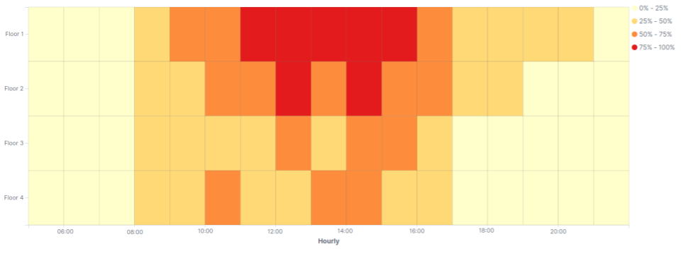
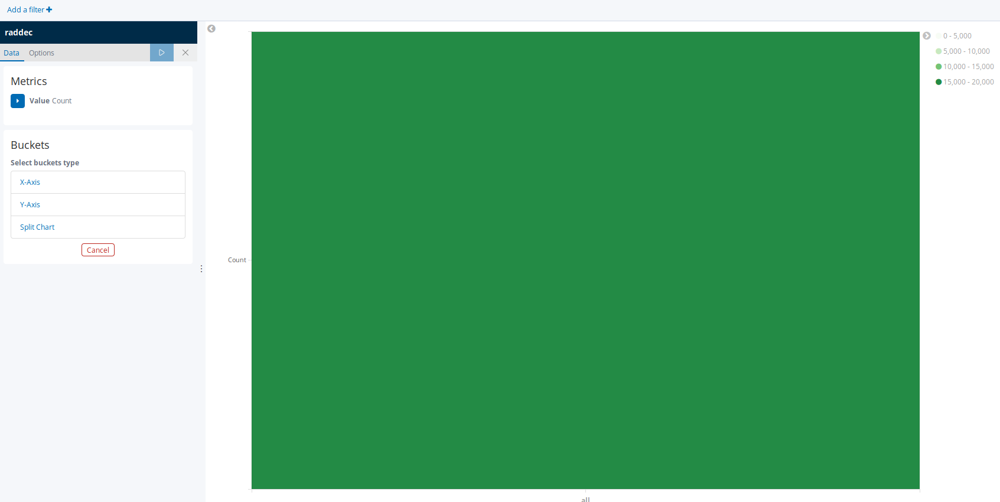
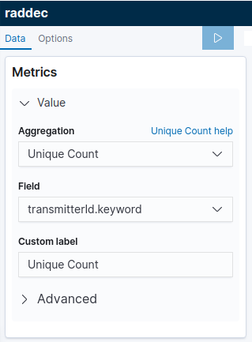
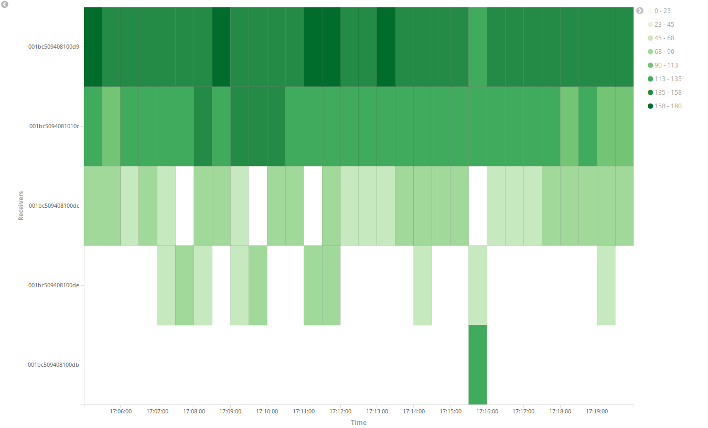
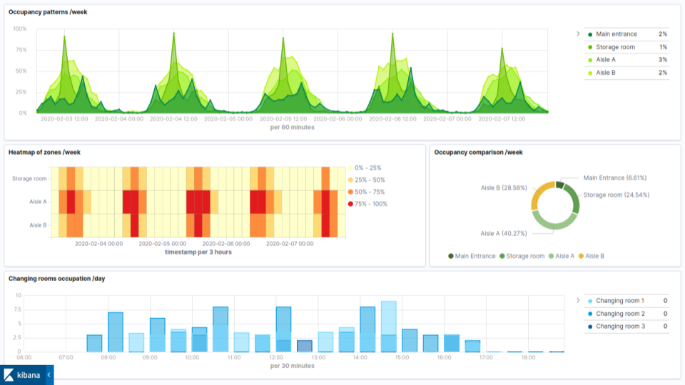

Create a space/time occupancy heatmap in Kibana
Our step-by-step guide to create a heatmap to visualise the occupancy of a physical space over time.
The TL;DR (Too Long; Didn't Read)
Learn how we at reelyActive use Kibana heatmaps to observe the occupancy of a physical space over time.
- What will this accomplish?
- A visualisation of occupancy by zone over time, as determined by wireless device traffic.
- Is there an easier way?
- Manual occupancy counts using pen and paper?
- So why would I read this?
- To learn both how and why to automate relative occupancy measurement with a heatmap visualisation.
Prerequisites
reelyActive open source software with Elasticsearch and Kibana.
-

[Optional] Prepare a reelyActive laptop from scratch
Includes our step-by-step guide to install Elasticsearch and Kibana on a Linux computer/server. -

[Optional] Set up a hosted Elasticsearch Service
Includes our step-by-step guide to setup Elastic's convenient hosted cloud service.
In order for there to be data to visualise, the reelyActive software must also have collected and written raddec data to Elasticsearch.
Creating a new heatmap visualisation Step 1 of 3
Create a heatmap in Kibana with the default settings.
- What's a heatmap?
- A heatmap displays the relative counts of a variable across two other variables (the X and Y axes).
- Why Kibana?
- Kibana makes it easy to visualise data from an Elasticsearch database, where the source data is stored.
Open Kibana and then:
- Select the Visualize tab from the left menu bar
- Click the Create a Visualization button
- Select the Heat Map chart
The default settings will result in a heatmap with just one bucket being generated, similar to that below. The next step will be to define a meaningful set of buckets.
Defining heatmap Metrics Step 2 of 3
Define a meaningful set of metrics and buckets to visualize space/time occupancy
- What's a bucket?
- A bucket is a computer science term for grouping data based on a criteria.
- What are these criteria?
- The X-axis will represent time intervals and the Y-axis will represent individual radio receivers which detect occupancy in specific physical spaces.
In the heatmap editor, configure the Metrics as indicated below:
- 
-
- Select Unique Count from the Aggregation pull-down
- Select transmitterId.keyword from the Field pull-down
- Enter a label in the Custom Label field
- Click the right arrow on the top of the tool bar to update the changes
Then configure the Buckets of the X-Axis and Y-Axis as indicated below:
- Click to expand the X-Axis bucket
- Select Date Histogram from the Aggregation pull-down
- Select timestamp from the Field pull-down
- Select a time interval from the Minimal Interval pull-down
- Enter Time in the Custom Label field
- Click the right arrow on the top of the tool bar to update the changes
- Click the Add sub-buckets button to add an Y-Axis
- Select Filters aggregation from the pull-down
- Each filter will collect all documents that match its associated zone. Customize the filter by adding receiverId.keyword(s), RSSI threshold, Type filter etc.
- Define a Label to specify the zone by clicking the icon
- Click the right arrow on the top of the tool bar to update the changes
The heatmap should now feature a grid of buckets providing a visualisation of relative occupancy by receiver over time, similar to that below.
The basic heatmap visualisation of space/time occupancy is complete. The remainder of the tutorial covers customization and the possibilities for going further.
Customizing the heatmap settings Step 3 of 3
Select pretty colours and more!
- Why would I do this?
- Good data may be the foundation for good decision making, but pretty data is what makes decision-makers notice and act!
In the heatmap editor, select the Options tab at the top and consider customizing the following options:
| Option | Description |
|---|---|
| Color Schema | Select an existing color schema or define custom colors. |
| Reverse Color Schema | Reverse the color schema by selecting this checkbox. |
| Color Scale | Select linear, log and sqrt scales to adjust the relative intensity of the bucket colours. |
| Scale to Data Bounds | Check this box to adjust the lower and upper bounds to match the source data. By default the Y axis starts at zero. |
| Percentage Mode | Check this box to change number into percentage. |
Each change should be saved by clicking the right arrow on the top of the tool bar.
This visualisation can be combined with other visualisations as part of a space occupancy dashboard, such as that below.
The underlying Elasticsearch query
GET raddec/_search
{
"size": 0,
"aggs": {
"date": {
"date_histogram": {
"field": "timestamp",
"interval": "1h"
},
"aggs": {
"receivers": {
"significant_terms": {
"field": "receiverId.keyword",
"size": 10
}
}
}
}
},
"query": {
"match_all": {}
}
}
Where to next?
Create other visualizations, or continue exploring our open architecture and all its applications.
-

reelyActive Kibana integration overview
Find links to all our Kibana tutorials. -

Create a space utilization dashboard
Find links to all our Kibana tutorials. -

diyActive Home
The home for reelyActive developers.